@VERSION@
VRx Backpack
Firmware Update
Upload the correct firmware file. A bad flash may require USB/Serial recovery.
RTC Update via NTP
Update goggle RTC clock using an NTP server. Requires internet access on the connected network.
Head Tracker Controls
Board Orientation
Set orientation by applying rotations from flat/level using the right-hand rule.
- Pitch axis — positive = pitch back
- Roll axis — positive = roll right
- Yaw axis — positive = yaw left
0° (0°)
0° (0°)
0° (0°)